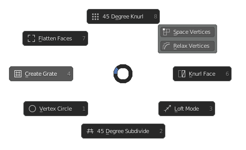

Mesh Tools Menu
Hotkey: Ctrl+Shift+X
Functions / Table of Contents
- 45 Degree Knurl
- Space Vertices
- Relax Vertices
- Knurl Face
- Loft Mode
- 45 Degree Subdivide
- Vertex Circle
- Create Grate
- Flatten Faces
45 Degree Knurl
Subdivides faces at a 45 degree angle then creates a knurl pattern in the selected faces.
Space Vertices
Spaces the selected vertices to an even interval.
Relax Vertices
Smooths out selected vertices to give a less jagged look.
Knurl Face
Creates a knurl pattern in the selected faces. The center vertices of the knurl pattern are then selected so extruding the knurl is easy.
Loft Mode
Enters into a mode where you can interpolate geometry between faces.
45 Degree Subdivide
Subdivides selected faces at a 45 degree angle. This creates a criss-cross pattern in the faces.
Vertex Circle
Creates a circle for each vertex selected on a mesh. The circles' origins are centred on the selected vertices. First the function enters a mode where the resolution of the circle is set, then the size.
Create Grate
Creates an inset grid pattern in the selected faces. Useful for extruding square holes in the mesh to create a grate or mesh.
Flatten Faces
Flattens selected faces to a common plane, the plane is determined automatically.